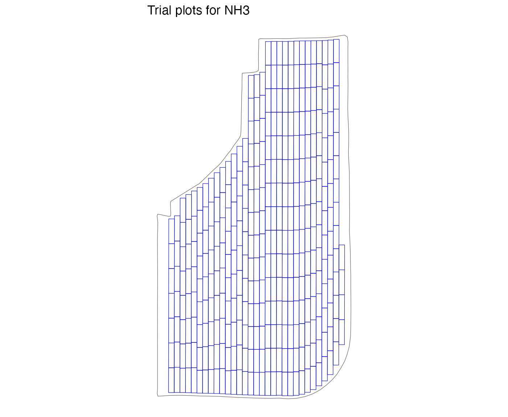
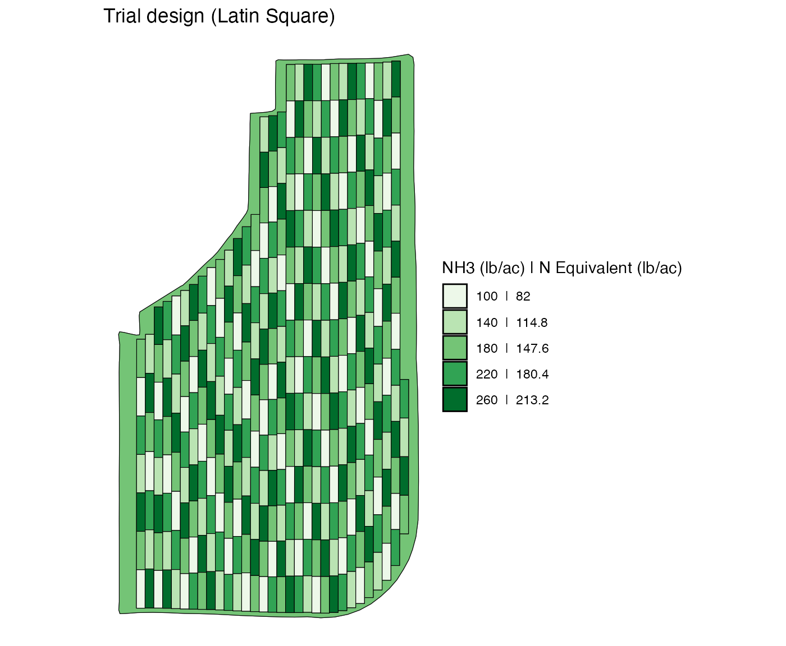

When the field is curved
When the field is curved, make_exp_plots() makes no
effort to keep the length of plots across strips the same. Rather, it
will find the best plot width within [min_plot_width,
max_plot_width] that makes the most use of the available
space. Also, make_exp_plots() does not try to start strips
so that the bottom line of their first plots are lined up to be
stratight. Consequently, when the field is curved, experiment plots will
look like this.
n_plot_info <-
prep_plot(
input_name = "NH3",
unit_system = "imperial",
machine_width = 30,
section_num = 1,
harvester_width = 20,
headland_length = 30,
side_length = 60
)
exp_data <-
make_exp_plots(
input_plot_info = n_plot_info,
boundary_data = system.file("extdata", "boundary-irregular1.shp", package = "ofpetrial"),
abline_data = system.file("extdata", "ab-line-irregular1.shp", package = "ofpetrial"),
abline_type = "free"
)
#> Linking to GEOS 3.11.0, GDAL 3.5.3, PROJ 9.1.0; sf_use_s2() is TRUE
#> Warning: There was 1 warning in `dplyr::mutate()`.
#> ℹ In argument: `experiment_plots_dissolved = list(...)`.
#> ℹ In row 1.
#> Caused by warning:
#> ! package 'sf' was built under R version 4.2.3
viz(exp_data, type = "layout")
In this kind of spatial arrangement of experiment plots, some blocks can be shaped not so rectangular and it is simply impossible to define regular rectangular blocks. 5 by 5 blocks would look like below for this field if you try to assign blocks regardless.

#> Warning: Removed 1 row containing missing values or values outside the scale range
#> (`geom_text()`).This means that designing trial using a randomized block design for this type of field may not produce a design you might have intended.
Field with ditches and holes
More often than not, fields have ditches (or parts where crops cannot
be grown). The make_exp_plots() function avoids such areas
automatically in creating experiment plots like below:
n_plot_info <-
prep_plot(
input_name = "NH3",
unit_system = "imperial",
machine_width = 30,
section_num = 1,
harvester_width = 20,
headland_length = 30,
side_length = 60,
min_plot_length = 250
)
exp_data <-
make_exp_plots(
input_plot_info = n_plot_info,
boundary_data = system.file("extdata", "field_boundary_with_holes.shp", package = "ofpetrial"),
abline_data = system.file("extdata", "ab_line_for_field_with_holes.shp", package = "ofpetrial")
)
viz(exp_data, type = "layout")